fastwad
fastwad is a modern, deterministic C++ engine and CLI utility designed for compiling, inspecting, and extracting GoldSrc (Half-Life 1, Counter-Strike 1.6) and Quake (WAD2/WAD3) texture archives. It delivers byte-level reproducible builds across Windows and Linux, high-fidelity 256-color K-Means++ quantization, Floyd-Steinberg spatial error diffusion dithering, and automatic 4-level spatial mipmap downsampling.
Built with zero external runtime dependencies, fastwad provides intelligent 16-pixel dimension snapping with smart 2px micro-stretch heuristics, GoldSrc special lump prefix preservation ({, !, +, ~), machine-readable --json output for tooling pipelines (TrenchBroom, J.A.C.K., Hammer, CI/CD), and an embeddable C++17 single-header SDK (<fastwad/fastwad.hpp>) for in-memory packing, unpacking, and inspection.
Interactive Playground & CLI Builder
Live Visual Capability Showcase
Generated automatically on CI builds validating 256-color quantization, spatial dithering, alpha cutouts, and 4 mip levels.
Gradient Skybox
256x128 | 24-bit to 8-bitTesting K-Means++ clustering on smooth RGB transitions with Floyd-Steinberg error diffusion.
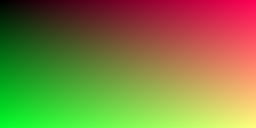
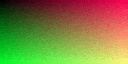
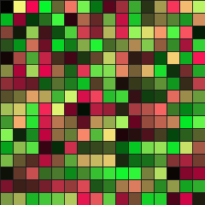

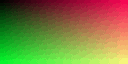
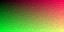
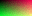
{Chainlink Fence
Wire Texture | Transparent CutoutReal chainlink wire texture with alpha channel mapping to GoldSrc key color (RGB 0,0,255) and palette index 255.
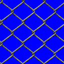
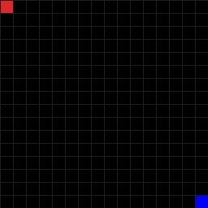

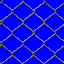
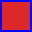
Sci-Fi Checker Panel
256x256 | High FrequencyValidates downsampling spatial filtering across 4 mip levels without aliasing noise.


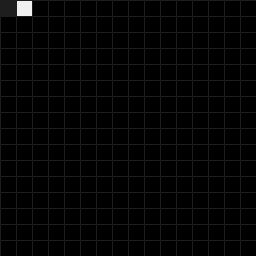
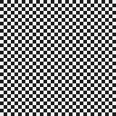
Cyberpunk Plasma Waves
128x256 | Wide GamutContinuous sinusoidal RGB waves verifying maximum 256-color gamut representation.
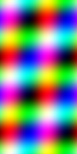
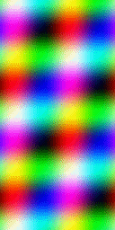
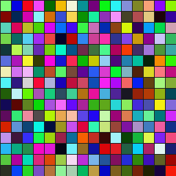

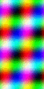
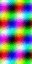
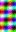
Quickstart Integration
Build and extract WAD archives using command-line pipelines or mapping tools.
fastwad build ./textures ./halflife.wad --json
fastwad list ./halflife.wad --json | jq .lumps[].name
fastwad extract ./halflife.wad ./extracted --json
Embeddable C++17 Header SDK
Include fastwad/fastwad.hpp directly in your C++ applications for in-memory buffer operations.
#include <fastwad/fastwad.hpp>
#include <iostream>
#include <vector>
int main() {
// 1. Inspect archive in memory
auto info = fastwad::InspectWadFromMemory(wad_ptr, wad_size);
if (info) {
std::cout << "Total lumps: " << info->num_lumps << "\n";
}
// 2. Unpack textures into in-memory structs
auto textures = fastwad::UnpackWadFromMemory(wad_ptr, wad_size);
if (textures) {
// 3. Repack back into bit-for-bit WAD3 binary stream
std::vector<uint8_t> bytes = fastwad::PackWadToMemory(*textures, fastwad::WadFormat::WAD3);
}
return 0;
}CLI Options & Flags Reference
| Option / Flag | Default | Type | Description |
|---|---|---|---|
| --json | false |
flag |
Outputs structured JSON metrics to stdout for tooling scripts. |
| wad2=true | false |
bool |
Generates Quake 1 WAD2 format instead of GoldSrc WAD3. |
| disable_dither=true | false |
bool |
Disables Floyd-Steinberg error diffusion dithering. |
| max_size=512 | 256 |
integer |
Max texture bounding box (256, 512, 1024). |
| align=center | center |
string |
Padding alignment: center, top, bottom, left, right. |
| stretch=true | false |
bool |
Forces stretch to max_size instead of aspect containment. |
| pad_r, pad_g, pad_b | 0 0 255 |
RGB (0-255) |
RGB value for padding and transparency key color (index 255). |
| format=bmp | png |
string |
Extraction image format (png or bmp). |